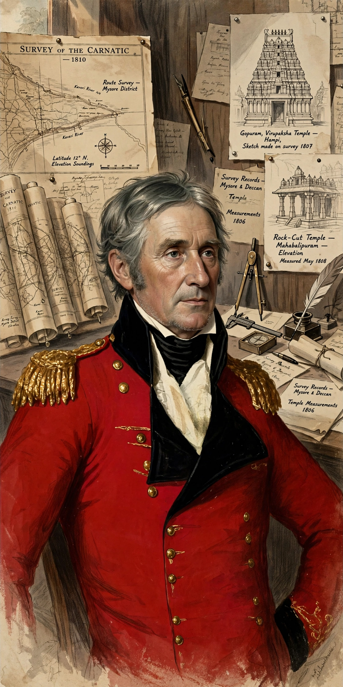

Colonel Colin Mackenzie (1754 – 8 May 1821) was a Scottish army officer in the British East India Company who became the first Surveyor General of India. He assembled a vast collection of manuscripts, maps, coins and drawings documenting Indian history, religion and antiquities.

| Born | 1754, Stornoway, Scotland |
|---|---|
| Died | 8 May 1821, Calcutta, India |
| Occupation | Soldier, surveyor, orientalist |
Mackenzie arrived in India in 1783 as an engineer officer, took part in campaigns against Mysore, and surveyed newly acquired territories. After the fall of Seringapatam in 1799 he surveyed Mysore. He later served in Java during the British occupation (1811–1815), where his teams documented antiquities including Prambanan, and in 1815 he became Surveyor General of India.
Working with Indian assistants — notably the Kavali brothers — he collected thousands of local histories (kaifiyats), inscriptions and texts in many South and Southeast Asian languages relating to Hindu temples, dynasties and the epics. After his death the collection was divided between the British Library, and libraries in Madras (Chennai) and Calcutta (Kolkata), where it remains a foundational source for South Indian history.